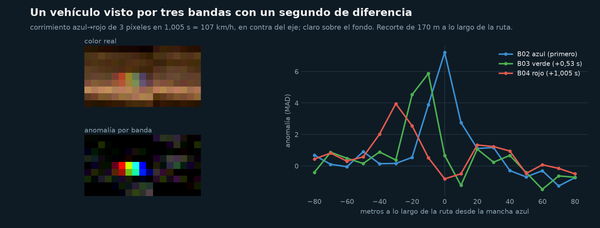
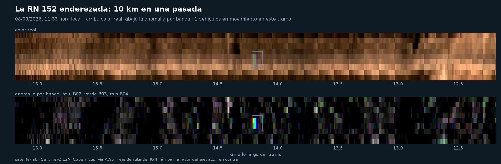
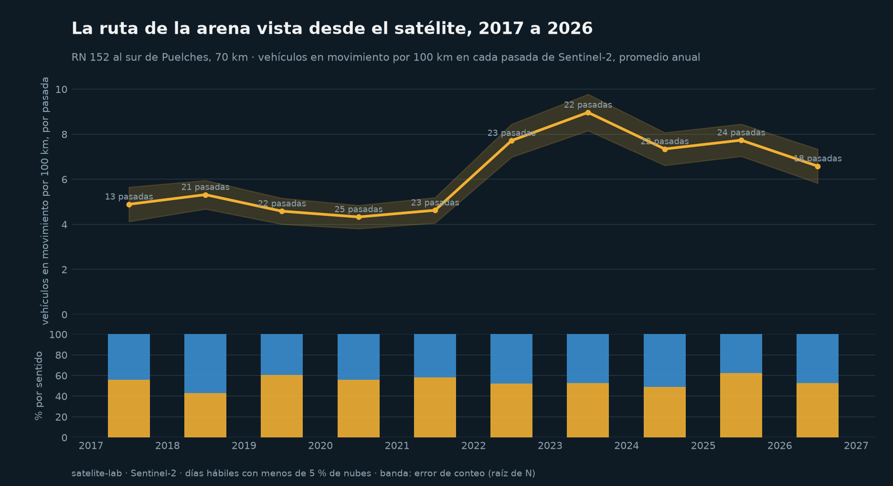
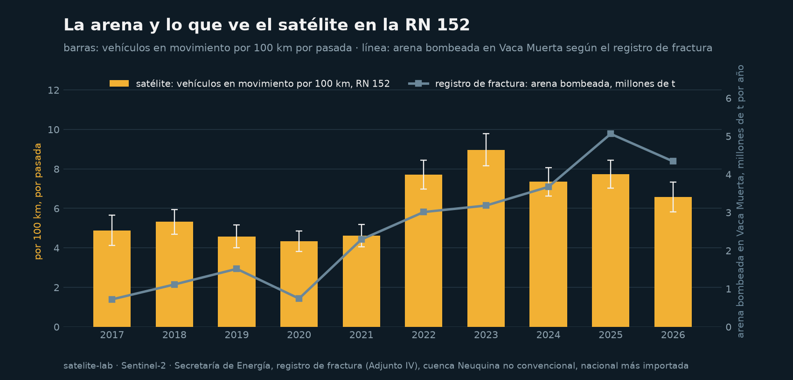
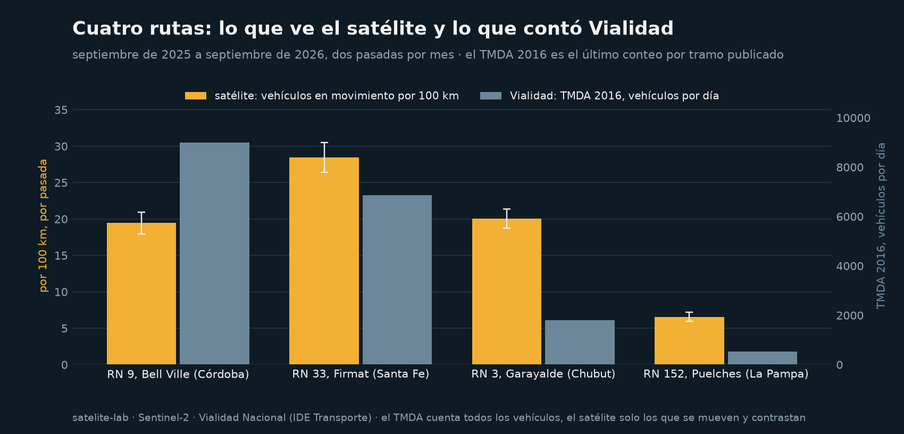

El satélite cuenta camiones
Sentinel-2 toma el azul, el verde y el rojo con un segundo de diferencia. Un vehículo en movimiento queda como un arcoíris de tres píxeles sobre la ruta; este laboratorio los cuenta. Actualizado el 24/09/2026.
1,005 sentre la toma del azul y la del rojo: 22 m a 80 km/h, dos píxeles
7,3vehículos en movimiento por 100 km en la RN 152 en 2024-2026, contra 5,1 en 2017-2018
840vehículos contados en 13,465 km de pasadas sobre la ruta de la arena
4rutas comparadas con el conteo de Vialidad en el último año
Un vehículo, tres bandas


La ruta de la arena, 2017 a 2026

| año | pasadas | km recorridos | vehículos | por 100 km | ± error | % hacia Neuquén |
|---|---|---|---|---|---|---|
| 2017.0 | 13 | 839 | 41 | 4,9 | 0,8 | 56 |
| 2018.0 | 21 | 1.317 | 70 | 5,3 | 0,6 | 43 |
| 2019.0 | 22 | 1.375 | 63 | 4,6 | 0,6 | 60 |
| 2020.0 | 25 | 1.618 | 70 | 4,3 | 0,5 | 56 |
| 2021.0 | 23 | 1.449 | 67 | 4,6 | 0,6 | 58 |
| 2022.0 | 23 | 1.439 | 111 | 7,7 | 0,7 | 52 |
| 2023.0 | 22 | 1.372 | 123 | 9,0 | 0,8 | 53 |
| 2024.0 | 22 | 1.389 | 102 | 7,3 | 0,7 | 49 |
| 2025.0 | 24 | 1.513 | 117 | 7,7 | 0,7 | 62 |
| 2026.0 | 18 | 1.155 | 76 | 6,6 | 0,8 | 53 |

Cuatro rutas contra Vialidad

| ruta | pasadas | km | vehículos | por 100 km | ± error | TMDA 2016 |
|---|---|---|---|---|---|---|
| RN 9, Bell Ville (Córdoba) | 17 | 891 | 173 | 19,4 | 1,5 | 9.000 |
| RN 33, Firmat (Santa Fe) | 20 | 661 | 188 | 28,4 | 2,1 | 6.850 |
| RN 3, Garayalde (Chubut) | 21 | 1.156 | 232 | 20,1 | 1,3 | 1.803 |
| RN 152, Puelches (La Pampa) | 26 | 1.678 | 110 | 6,6 | 0,6 | 520 |
El satélite ve una muestra de los vehículos (los que contrastan con la ruta y van a más de 54 km/h), no el total, y esa muestra no es proporcional al tránsito: el índice sirve para comparar rutas y años con el mismo método, no para contar camiones por día.
Cómo
- Eje de la ruta: red vial nacional del IGN. Imágenes: Sentinel-2 L2A (Copernicus) leídas por ventana desde el catálogo abierto de AWS, sin cuenta.
- Detector propio: ruta enderezada, fondo por mediana móvil, corrimiento azul→rojo por correlación cruzada, verde en el medio, dos o tres píxeles.
- Pasadas de días hábiles con menos de 5 % de nubes, dos por mes; máscara de nubes por píxel.
- Código, tests y notebook: github.com/dpinero14/satelite-lab.